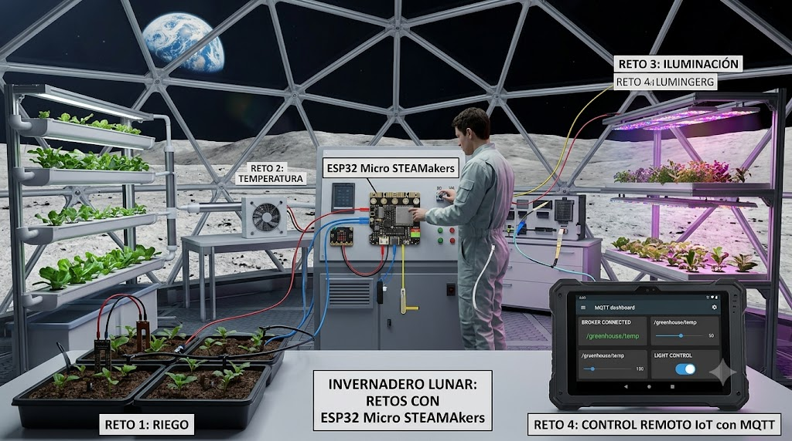

Retos en el invernadero

Esta propuesta de simples retos combina lo visto en la descripción del software. El objetivo es diseñar y prototipar un sistema de soporte vital y automatización agrícola para condiciones extremas (como las de la Luna), utilizando la placa ESP32 Micro STEAMakers como el cerebro tecnológico.
A través de estos cuatro retos, el alumnado no solo aprende a programar y conectar hardware, sino que resuelve problemas reales de optimización de recursos en la exploración espacial. En una futura base lunar, la supervivencia dependerá de la capacidad de producir alimentos de forma autónoma. Dado que los recursos (agua, energía, suelo nutritivo) son extremadamente limitados y el entorno es hostil, la automatización es obligatoria.
El objetivo general es mantener vivas las plantas con la menor intervención humana posible, monitorizando el entorno en tiempo real.
Desarrollo de los Retos
Reto 1: Control de Riego Automatizado (Optimización del Agua)
El agua en la Luna es un recurso crítico. No podemos permitirnos desperdiciar ni una gota ni ahogar las raíces.
¿Qué se hace?: Se conecta un sensor de humedad de suelo a la ESP32 para medir constantemente la sequedad de la tierra (o del sustrato hidropónico).
Funcionamiento: Si la humedad cae por debajo de un umbral crítico, la placa activa una mini bomba de agua o una electroválvula para regar de forma localizada. El riego se detiene automáticamente en cuanto el sensor detecta que el suelo ha alcanzado la humedad óptima.
Reto 2: Regulación de Temperatura y Ventilación
La Luna sufre cambios térmicos extremos. Aunque el invernadero esté protegido por una cúpula geodésica, el calor generado por las luces de cultivo o el frío del exterior deben compensarse.
¿Qué se hace?: Se utiliza un sensor ambiental (como el DHT11 o DHT22) para medir la temperatura y la humedad del aire.
Funcionamiento: Si la temperatura sube demasiado, la ESP32 activa un ventilador para recircular el aire y refrigerar el ambiente. Si bajara demasiado, podría activar un sistema de calefacción simulado.
Reto 3: Iluminación Inteligente y Fotoperiodo
Sin una atmósfera como la de la Tierra y con ciclos de día/noche lunares muy diferentes (el día lunar dura unas dos semanas terrestres), las plantas necesitan ciclos de luz artificial (fotoperiodo) controlados para realizar la fotosíntesis de manera eficiente.
¿Qué se hace?: Se programa un sistema de luces LED de espectro completo (los tonos rosas/morados de la imagen, ideales para el crecimiento vegetal).
Funcionamiento: Mediante programación (o un sensor de luz/LDR), la ESP32 controla los encendidos y apagados automáticos para simular el día y la noche terrestres, garantizando que las plantas reciban las horas exactas de luz que necesitan.
Reto 4: Telemetría y Control Remoto IoT con MQTT (No se ha implementado como reto pero se puede tomar la referencia del código completo expuesto anteriormente)
Un astronauta no puede estar físicamente dentro del invernadero todo el tiempo, y los científicos en la Tierra necesitan supervisar el proyecto a miles de kilómetros de distancia.
¿Qué se hace?: Se aprovecha la conectividad Wi-Fi nativa de la ESP32 para enviar todos los datos recolectados (humedad, temperatura, estado de las luces) a un servidor (Broker MQTT).
Funcionamiento:
Lectura (Telemetría): Los datos se muestran en tiempo real en un panel de control (Dashboard) accesible desde una tablet, ordenador o móvil.
Control (Actuación): Desde ese mismo panel, el operario puede pulsar un botón virtual para activar el riego manualmente o apagar las luces si detecta una anomalía, sin necesidad de tocar la placa física.
Por supuesto, este material está abierto a definir cualquier reto adicional que se nos ocurra. La limitación es el número de pines libres que son escasos y del presupuesto. Los dispotivos I2C se pueden conectar tantos como se desee.